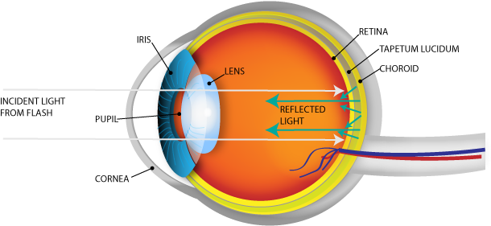
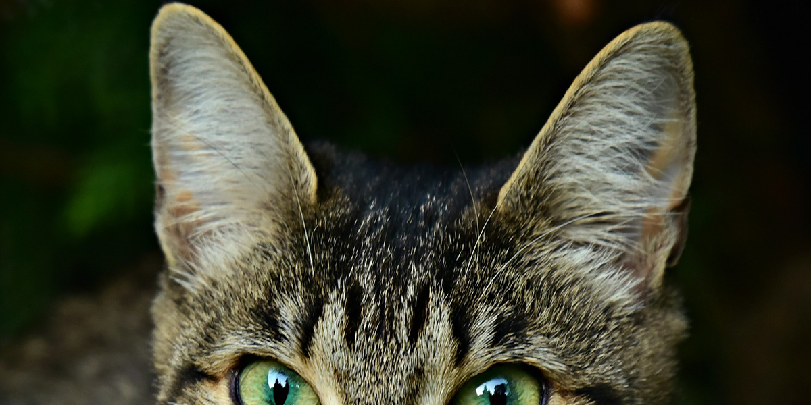
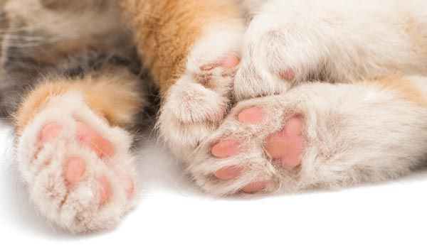
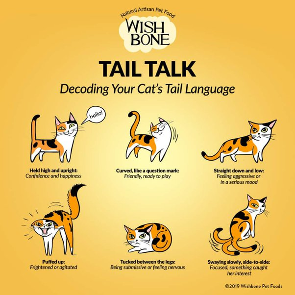

Knowledge on the basic physiology of cats are very important for every cat owner to know! Click on the different parts of the cat (shown below) to understand their physiology.
Alternatively, you can also watch this YouTube video to learn more!
VIDEO
Eyes
Cats have exceptional eyesight. Particularly in
the early evening and at night, they see better
than humans. Most cats can see kinds of light,
such as ultraviolet, that are invisible to humans.

Fig. 1 - Tapetum lucidum of the cats' eye.
Go back to learn more about another part!
Ears
Cats are exceedingly sensitive to sound; their
range of hearing extends well above and below
the range of human hearing. It is probable that
the cat has a keener sense of hearing than most
dogs, since it depends more upon sight and
hearing than smell when hunting.Their ears are cupped which serve as receptors and conductors of sound. When listening, the cat will move its head this way and that, turning its ears in the direction of the sound.

Fig. 2 - Cat's ears.
Go back to learn more about another part!
Paws
The rubbery, thick pads on your cat's paws cushion their feet and insulate them from weather extremes. Cat's claws are also found here. It is important to keep the nails trimmed and provide scratching surfaces for them! Overall, cat's put alot of wear and tear on their feet and it is important for their paws to be cared for! Fig. 3 shows what a cat's claw usually looks like!

Fig. 3 - Cat's paws.
Go back to learn more about another part!
Tail
The cat's tail helps them to balance! The tail serves as a counterbalance when cats walk on narrow spaces such as shelves. When a cat is running after a prey item, their tail also aids in balance.

Fig. 4 - Common behaviours of cats represented by their tails
Go back to learn more about another part!
Whiskers
Whiskers are specifically tuned sensory equipment that guide a cat through daily functions. These specialized hairs aid vision and help a cat navigate through its environment, providing additional sensory input, much like antennae on insects. Each whisker is filled with tiny, supersensitive nerves that cats can use for various functions, such as catching their prey or eating a meal.
VIDEO
Go back to learn more about another part!